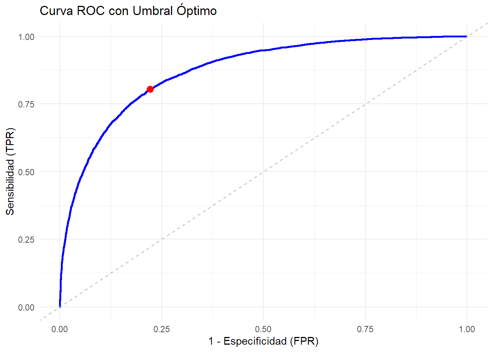

rm(list = ls())
pacman::p_load(tidyverse, eph, ggsci, flextable, ggrepel, GDAtools, plotly, patchwork, tidymodels, modelsummary)
eph <- get_microdata(year = 2016:2024, type = "individual", period = c(1, 2, 3, 4))
eph_h <- get_microdata(year = 2016:2024, type = "hogar", period = c(1, 2, 3, 4))
eph_h <- eph_h %>%
select(-c("PONDIH", "PONDERA", "REGION", "AGLOMERADO", "MAS_500", "ITF", "IPCF", "DECIFR", "IDECIFR", "RDECIFR", "GDECIFR", "PDECIFR", "ADECIFR", "DECCFR", "IDECCFR", "RDECCFR", "GDECCFR", "PDECCFR", "ADECCFR"))
eph <- eph %>%
left_join(eph_h, by = c("ANO4", "TRIMESTRE", "CODUSU", "NRO_HOGAR"))
canastas <- readxl::read_xlsx("fuentes/canastas_serie.xlsx")
theme_set(theme_bw())
rm(eph_h)Factores determinantes de la pobreza (2016-2024)
#Preparación de la base de datos
Descarga de bases y librerías
Construcción de variables
#Año y trimestre
eph <- eph %>%
mutate(semestre = case_when(TRIMESTRE <= 2 ~ 1,
TRIMESTRE > 2 ~ 2),
trim = case_when(TRIMESTRE == 1 ~ "I",
TRIMESTRE == 2 ~ "II",
TRIMESTRE == 3 ~ "III",
TRIMESTRE == 4 ~ "IV"),
ano2 = str_sub(as.character(ANO4), 3, 4))
eph$ano_trim <- paste(as.character(eph$ANO4), as.character(eph$trim), sep = "-")
eph$ano_sem <- paste(as.character(eph$ANO4), as.character(eph$semestre), sep = "-")
#Pobreza----------------------------------
eph <- calculate_poverty(base = eph, basket = canastas, print_summary = FALSE,
window = "semester")
eph <- eph %>%
mutate(pobreza_dic = factor(case_when(situacion %in% c("pobre", "indigente") ~ "Pobre",
situacion %in% "no_pobre" ~ "No pobre"),
levels = c("Pobre", "No pobre")))
#Sociodemográficas------------------------
eph <- eph %>%
mutate(NIVEL_ED = ifelse(NIVEL_ED > 6, 0, NIVEL_ED))
eph <- eph %>%
mutate(sexo_f = factor(CH04, labels = c("Varón", "Mujer")),
salud_f = factor(case_when(CH08 <= 2 | CH08 > 9 ~ "Tiene",
TRUE ~ "No tiene")),
migrante_f = factor(case_when(CH15 >= 1 & CH15 <= 3 ~ "Nativo",
CH15 == 4 ~ "Migrante lim",
CH15 == 5 ~ "Migrante no lim",
CH15 == 9 ~ "Nativo")),
edad = CH06)
eph <- eph %>%
group_by(ano_trim, CODUSU, NRO_HOGAR) %>%
mutate(clima_educ = max(NIVEL_ED),
cant_menores = sum(CH06 <= 18),
ocupados = sum(ESTADO == 1) / sum(CH06 >= 14)) %>%
mutate(clima_educ = factor(case_when(clima_educ <= 2 ~ "Primario completo",
clima_educ >= 3 & clima_educ <= 4 ~ "Secundario completo",
clima_educ >= 5 ~ "Terciario/universitario completo"),
levels = c("Primario completo",
"Secundario completo",
"Terciario/universitario completo"))) %>%
ungroup()
region <- diccionario_regiones
eph <- eph %>%
left_join(region, by = c("REGION" = "codigo"))
#Vivienda--------------------
eph <- eph %>%
mutate(vivienda = factor(case_when(II7 == 1 | II7 == 2 ~ "Propietario",
TRUE ~ "No propietario")),
calmat = case_when(IV3 == 1 & IV4 == 1 & IV5 == 1 ~ 1,
IV3 == 1 & IV4 == 1 & IV5 == 2 ~ 2,
IV3 == 1 & (IV4 >= 2 & IV4 <= 5) ~ 2,
IV3 == 1 & (IV4 >= 6 & IV4 <= 7) ~ 3,
IV3 == 2 & IV4 == 1 & IV5 == 1 ~ 2,
IV3 == 2 & IV4 == 1 & IV5 == 2 ~ 2,
IV3 == 2 & (IV4 >= 2 & IV4 <= 5) ~ 3,
IV3 == 2 & (IV4 >= 6 & IV4 <= 7) ~ 3,
IV3 == 3 & IV4 == 1 & IV5 == 1 ~ 3,
IV3 == 3 & IV4 == 1 & IV5 == 2 ~ 3,
IV3 == 3 & (IV4 >= 2 & IV4 <= 5) ~ 3,
IV3 == 3 & (IV4 >= 6 & IV4 <= 7) ~ 3,
TRUE ~ NA_real_ ),
calmat_dic = factor(case_when(calmat == 1 | calmat == 2 ~ "Satisfactoria",
TRUE ~ "No satisfactoria")),
incalserv = factor(case_when(IV7 == 1 & IV11 == 1 ~ "Satisfactoria",
TRUE ~ "No satisfactoria")),
hacinamiento = factor(case_when(IX_TOT/II2 > 3 ~ "Hacinamiento crítico",
IX_TOT/II2 <= 3 ~ "Sin hacinamiento")))
#Laborales-------------------------------
eph <- organize_caes(base = eph)
eph$cno <- ifelse(is.na(eph$PP04D_COD), eph$PP11D_COD, eph$PP04D_COD)
eph$cno12 <- ifelse(nchar(eph$cno) > 4, str_sub(eph$cno, 1, 2), str_sub(eph$cno, 1, 1))
eph$cno3 <- ifelse(nchar(eph$cno) > 4, str_sub(eph$cno, 3, 3), str_sub(eph$cno, 2, 2))
eph$cno4 <- ifelse(nchar(eph$cno) > 4, str_sub(eph$cno, 4, 4), str_sub(eph$cno, 3, 3))
eph$cno5 <- ifelse(nchar(eph$cno) > 4, str_sub(eph$cno, 5, 5), str_sub(eph$cno, 4, 4))
eph$cno12 <- as.numeric(eph$cno12)
eph$cno3 <- as.numeric(eph$cno3)
eph$cno4 <- as.numeric(eph$cno4)
eph$cno5 <- as.numeric(eph$cno5)
eph <- eph %>%
mutate(tamano = case_when((PP04C > 0 & PP04C <= 5) | (PP04C == 99 & PP04C99 == 1) ~ 1,
(PP04C > 5 & PP04C < 99) | (PP04C == 99 & (PP04C99 == 2 | PP04C99 == 3)) ~ 2,
((PP04C == 0 & PP04C99 == 0) | (PP04C == 99 & PP04C99 == 9)) & PP04A == 1 ~ 2,
PP04A == 1 ~ 2,
TRUE ~ NA_real_))
eph <- eph %>%
mutate(empleos_cant = factor(case_when(PP03C == 1 ~ "Un empleo",
PP03C == 2 ~ "Más de un empleo",
TRUE ~ NA_character_)),
intensi = factor(case_when(INTENSI == 1 ~ "Subocupado",
INTENSI == 2 ~ "Ocupado pleno",
INTENSI == 3 ~ "Sobreocupado",
TRUE ~ NA_character_)),
rama = substr(caes_eph_label, start = 1, stop = 28),
rama = factor(rama),
precariedad = factor(case_when(CAT_OCUP == 3 & (PP07H == 1 | PP07I == 1) ~ "No precario",
CAT_OCUP == 3 & PP07H != 1 & PP07I != 1 ~ "Precario",
CAT_OCUP == 2 & cno5 <= 2 ~ "No precario",
CAT_OCUP == 2 & cno5 > 2 ~ "Precario",
CAT_OCUP == 1 & tamano == 2 ~ "No precario",
CAT_OCUP == 1 & tamano != 2 & caes_division_cod %in% c(62, 63, 85) ~ "No precario",
CAT_OCUP == 1 & tamano != 2 & !caes_division_cod %in% c(62, 63, 85) ~ "Precario",
CAT_OCUP == 4 | CAT_OCUP == 9 ~ "Precario",
TRUE ~ NA_character_)),
categoria = case_when(CAT_OCUP == 1 & cno3 == 0 ~ 1,
CAT_OCUP == 2 | cno3 == 1 ~ 2,
(CAT_OCUP == 3 | CAT_OCUP == 4) | (cno3 == 2 | cno3 == 3) ~ 3,
(CAT_OCUP == 3 | CAT_OCUP == 4) & (cno3 == 0) ~ 3,
CAT_OCUP == 1 & cno3 > 1 ~ 1,
CAT_OCUP == 9 & cno3 == 0 ~ 1,
CAT_OCUP == 9 & cno3 > 1 ~ 3,
cno3 == 9 & CAT_OCUP > 2 ~ 3),
condicion = factor(case_when(ESTADO == 1 ~ "Ocupado",
ESTADO == 2 ~ "Desocupado",
(ESTADO == 3 | ESTADO == 4) & CAT_INAC == 1 ~ "Inactivo jubilado",
(ESTADO == 3 | ESTADO == 4) & CAT_INAC > 1 ~ "Inactivo otro",
TRUE ~ NA_character_)))
#Clase social----------------
eph <- eph %>%
mutate(cobhe = case_when(#Clase I: propietarios > 5 y directivos, gerentes, funcionarios de dirección
cno12 >= 0 & cno12 <= 4 ~ 1,
cno12 == 6 | cno12 == 7 ~ 1,
#Clase II: propietarios < 5 y directivos, gerentes, funcionarios de dirección
cno12 == 5 ~ 2,
#Clase III: cuenta propias profesionales/calificados
(cno12 == 32 | cno12 == 35 | cno12 == 51 | cno12 == 52 | cno12 == 53 |
cno12 == 54 | cno12 == 57 | cno12 == 58 | cno12 == 60 |
cno12 == 61 | cno12 == 62 | cno12 == 63 | cno12 == 64 |
cno12 == 65 | cno12 == 70 | cno12 == 71 | cno12 == 72 |
cno12 == 80 | cno12 == 82) & categoria == 2 & cno5 < 3 ~ 3,
(cno12 == 10 | cno12 == 11 | cno12 == 20 | cno12 == 30 | cno12 == 31 | cno12 == 40 |
cno12 == 41 | cno12 == 42 | cno12 == 43 | cno12 == 44 | cno12 == 45 |
cno12 == 46 | cno12 == 47 | cno12 == 50 | cno12 == 81 | cno12 == 90 |
cno12 == 91 | cno12 == 92) & categoria == 2 & cno5 <= 3 ~ 3,
cno12 == 34 & categoria == 2 & cno5 <= 2 ~ 3,
cno12 == 34 & categoria == 2 & cno5 > 2 & cno4 > 1 ~ 3,
cno12 == 35 & categoria == 2 & cno5 > 2 & cno4 > 1 ~ 3,
#Clase IV: trabajadores no manuales > 5
(cno12 >= 10 & cno12 <= 20) & categoria == 3 & tamano == 2 ~ 4,
cno12 == 30 & categoria == 3 & tamano == 2 ~ 4,
(cno12 == 31 | cno12 == 32) & categoria == 3 & tamano == 2 & cno5 <= 3 ~ 4,
cno12 == 35 & categoria == 3 & tamano == 2 & cno5 <= 3 ~ 4,
cno12 == 36 & categoria == 3 & tamano == 2 & cno5 <= 2 ~ 4,
(cno12 >= 40 & cno12 <= 43) & categoria == 3 & tamano == 2 ~ 4,
cno12 == 44 & categoria == 3 & tamano == 2 & cno5 <= 2 ~ 4,
(cno12 == 45 | cno12 == 46) & categoria == 3 & tamano == 2 ~ 4,
(cno12 >= 47 & cno12 <= 49) & categoria == 3 & tamano == 2 & cno5 <= 2 ~ 4,
(cno12 == 50 | cno12 == 52) & categoria == 3 & tamano == 2 ~ 4,
cno12 == 54 & categoria == 3 & tamano == 2 & cno5 <= 3 ~ 4,
cno12 == 58 & categoria == 3 & tamano == 2 & cno5 <= 2 ~ 4,
(cno12 >= 60 & cno12 <= 63) & categoria == 3 & tamano == 2 & cno5 <= 2 & cno4 != 2 ~ 4,
(cno12 >= 70 & cno12 <= 72) & categoria == 3 & tamano == 2 & cno5 <= 2 & cno4 != 2 ~ 4,
cno12 == 80 & categoria == 3 & tamano == 2 & cno5 <= 2 & cno4 != 2 ~ 4,
cno12 == 81 & categoria == 3 & tamano == 2 ~ 4,
cno12 == 91 & categoria == 3 & tamano == 2 ~ 4,
cno12 == 92 & categoria == 3 & tamano == 2 & cno5 == 1 ~ 4,
#Clase V: trabajadores manuales > 5
(cno12 == 31 | cno12 == 32) & categoria == 3 & tamano == 2 & cno5 == 4 ~ 5,
cno12 == 34 & categoria == 3 & tamano == 2 ~ 5,
cno12 == 35 & categoria == 3 & tamano == 2 & cno5 == 4 ~ 5,
cno12 == 36 & categoria == 3 & tamano == 2 & cno5 > 2 ~ 5,
cno12 == 44 & categoria == 3 & tamano == 2 & cno5 > 2 ~ 5,
(cno12 >= 47 & cno12 <= 49) & categoria == 3 & tamano == 2 & cno5 > 2 ~ 5,
cno12 == 51 & categoria == 3 & tamano == 2 ~ 5,
cno12 == 53 & categoria == 3 & tamano == 2 ~ 5,
cno12 == 54 & categoria == 3 & tamano == 2 & cno5 == 4 ~ 5,
(cno12 == 56 | cno12 == 57) & categoria == 3 & tamano == 2 ~ 5,
cno12 == 58 & categoria == 3 & tamano == 2 & cno5 > 2 ~ 5,
(cno12 >= 60 & cno12 <= 63) & categoria == 3 & tamano == 2 & cno5 <= 2 & cno4 == 2 ~ 5,
(cno12 >= 60 & cno12 <= 63) & categoria == 3 & tamano == 2 & cno5 > 2 ~ 5,
(cno12 == 64 | cno12 == 65) & categoria == 3 & tamano == 2 ~ 5,
(cno12 >= 70 & cno12 <= 72) & categoria == 3 & tamano == 2 & cno5 <= 2 & cno4 == 2 ~ 5,
(cno12 >= 70 & cno12 <= 72) & categoria == 3 & tamano == 2 & cno5 > 2 ~ 5,
cno12 == 80 & categoria == 3 & tamano == 2 & cno5 <= 2 & cno4 == 2 ~ 5,
cno12 == 80 & categoria == 3 & tamano == 2 & cno5 > 2 ~ 5,
(cno12 == 82 | cno12 == 90) & categoria == 3 & tamano == 2 ~ 5,
cno12 == 92 & categoria == 3 & tamano == 2 & cno5 > 1 ~ 5,
#Clase VI: trabajadores no manuales < 5
(cno12 >= 10 & cno12 <= 20) & categoria == 3 & tamano == 1 ~ 6,
cno12 == 30 & categoria == 3 & tamano == 1 ~ 6,
(cno12 == 31 | cno12 == 32) & categoria == 3 & tamano == 1 & cno5 <= 3 ~ 6,
cno12 == 35 & categoria == 3 & tamano == 1 & cno5 <= 3 ~ 6,
cno12 == 36 & categoria == 3 & tamano == 1 & cno5 <= 2 ~ 6,
(cno12 >= 40 & cno12 <= 43) & categoria == 3 & tamano == 1 ~ 6,
cno12 == 44 & categoria == 3 & tamano == 1 & cno5 <= 2 ~ 6,
(cno12 == 45 | cno12 == 46) & categoria == 3 & tamano == 1 ~ 6,
(cno12 >= 47 & cno12 <= 49) & categoria == 3 & tamano == 1 & cno5 <= 2 ~ 6,
(cno12 == 50 | cno12 == 52) & categoria == 3 & tamano == 1 ~ 6,
cno12 == 54 & categoria == 3 & tamano == 1 & cno5 <= 3 ~ 6,
cno12 == 58 & categoria == 3 & tamano == 1 & cno5 <= 2 ~ 6,
(cno12 >= 60 & cno12 <= 63) & categoria == 3 & tamano == 1 & cno5 <= 2 & cno4 != 2 ~ 6,
(cno12 >= 70 & cno12 <= 72) & categoria == 3 & tamano == 1 & cno5 <= 2 & cno4 != 2 ~ 6,
cno12 == 80 & categoria == 3 & tamano == 1 & cno5 <= 2 & cno4 != 2 ~ 6,
cno12 == 81 & categoria == 3 & tamano == 1 ~ 6,
cno12 == 91 & categoria == 3 & tamano == 1 ~ 6,
cno12 == 92 & categoria == 3 & tamano == 1 & cno5 == 1 ~ 6,
#Clase VII: trabajadores manuales < 5
(cno12 == 31 | cno12 == 32) & categoria == 3 & tamano == 1 & cno5 == 4 ~ 7,
cno12 == 34 & categoria == 3 & tamano == 1 ~ 7,
cno12 == 35 & categoria == 3 & tamano == 1 & cno5 == 4 ~ 7,
cno12 == 36 & categoria == 3 & tamano == 1 & cno5 > 2 ~ 7,
cno12 == 44 & categoria == 3 & tamano == 1 & cno5 > 2 ~ 7,
(cno12 >= 47 & cno12 <= 49) & categoria == 3 & tamano == 1 & cno5 > 2 ~ 7,
cno12 == 51 & categoria == 3 & tamano == 1 ~ 7,
cno12 == 53 & categoria == 3 & tamano == 1 ~ 7,
cno12 == 54 & categoria == 3 & tamano == 1 & cno5 == 4 ~ 7,
(cno12 == 56 | cno12 == 57) & categoria == 3 & tamano == 1 ~ 7,
cno12 == 58 & categoria == 3 & tamano == 1 & cno5 > 2 ~ 7,
(cno12 >= 60 & cno12 <= 63) & categoria == 3 & tamano == 1 & cno5 <= 2 & cno4 == 2 ~ 7,
(cno12 >= 60 & cno12 <= 63) & categoria == 3 & tamano == 1 & cno5 > 2 ~ 7,
(cno12 == 64 | cno12 == 65) & categoria == 3 & tamano == 1 ~ 7,
(cno12 >= 70 & cno12 <= 72) & categoria == 3 & tamano == 1 & cno5 <= 2 & cno4 == 2 ~ 7,
(cno12 >= 70 & cno12 <= 72) & categoria == 3 & tamano == 1 & cno5 > 2 ~ 7,
cno12 == 80 & categoria == 3 & tamano == 1 & cno5 <= 2 & cno4 == 2 ~ 7,
cno12 == 80 & categoria == 3 & tamano == 1 & cno5 > 2 ~ 7,
(cno12 == 82 | cno12 == 90) & categoria == 3 & tamano == 1 ~ 7,
cno12 == 92 & categoria == 3 & tamano == 1 & cno5 > 1 ~ 7,
cno12 == 55 ~ 7,
is.na(tamano) & PP04B1 == 1 ~ 7,
#Clase VIII: Cuenta propia semi-calificados y no calificados
(cno12 == 10 | cno12 == 32 | cno12 == 51 | cno12 == 52 | cno12 == 53 |
cno12 == 54 | cno12 == 57 | cno12 == 58 | cno12 == 60 |
cno12 == 61 | cno12 == 62 | cno12 == 63 | cno12 == 64 |
cno12 == 65 | cno12 == 70 | cno12 == 71 | cno12 == 72 |
cno12 == 80 | cno12 == 82) & categoria == 2 & (cno5 == 3 | cno5 == 4) ~ 8,
(cno12 == 11 | cno12 == 20 | cno12 == 30 | cno12 == 31 | cno12 == 40 |
cno12 == 41 | cno12 == 42 | cno12 == 43 | cno12 == 44 | cno12 == 45 |
cno12 == 46 | cno12 == 47 | cno12 == 50 | cno12 == 81 | cno12 == 90 |
cno12 == 91 | cno12 == 92) & categoria == 2 & (cno5 == 4) ~ 8,
cno12 == 34 & categoria == 2 & cno5 > 2 & cno4 == 1 ~ 8,
cno12 == 35 & categoria == 2 & cno5 > 2 & cno4 == 1 ~ 8,
cno12 == 36 & categoria == 2 ~ 8,
cno12 == 56 & categoria == 2 ~ 8,
cno12 == 33 ~ 8,
categoria == 2 & cno5 == 4 ~ 8,
TRUE ~ NA_real_))
eph$cobhe_f <- factor(eph$cobhe,
labels = c('Propietarios y directivos >5',
'Propietarios y directivos <=5',
'Cuenta propia profesionales / calificados',
'Trabajadores no manuales >5',
'Trabajadores manuales >5',
'Trabajadores no manuales <=5',
'Trabajadores manuales <=5',
'Cuenta propia no calificados'))
eph <- eph %>%
mutate(horas = PP3E_TOT + PP3F_TOT) %>%
mutate(horas = ifelse(horas > 168, NA_real_, horas))
#Ingresos no laborales-------------
eph <- eph %>%
mutate(subsidio = case_when(V5 == 1 ~ 1,
V5 == 2 | V5 == 9 ~ 0))
#Salva la base-------
# saveRDS(eph, "bases/eph.rds")Selección de variables para modelar y sets de entrenamiento y testeo
Se va a utilizar el primer trimestre de 2017 para entrenar el modelo y el segundo trimestre de 2017 para testearlo.
#Me quedo con hogares con jefe de hogar ocupado
eph_mod <- eph %>%
filter(CH03 == 1, ESTADO == 1)
#Selecciono variables para modelar
eph_mod <- eph_mod %>%
select(ano_trim, CODUSU, NRO_HOGAR, sexo_f, edad, salud_f, migrante_f,
clima_educ, cant_menores, ocupados,
cobhe_f, pobreza_dic, empleos_cant,
intensi, rama, precariedad, region,
horas, vivienda, calmat_dic, incalserv, hacinamiento, subsidio, PONDIH)
train1 <- eph_mod %>%
filter(ano_trim == "2016-III" | ano_trim == "2016-IV")
test_20171 <- eph_mod %>%
filter(ano_trim == "2017-I")
test_20172 <- eph_mod %>%
filter(ano_trim == "2017-II")
test_20173 <- eph_mod %>%
filter(ano_trim == "2017-III")
test_20174 <- eph_mod %>%
filter(ano_trim == "2017-IV")
test_20181 <- eph_mod %>%
filter(ano_trim == "2018-I")
test_20182 <- eph_mod %>%
filter(ano_trim == "2018-II")
test_20183 <- eph_mod %>%
filter(ano_trim == "2018-III")
train2 <- eph_mod %>%
filter(ano_trim == "2018-IV" | ano_trim == "2019-I")
test_20192 <- eph_mod %>%
filter(ano_trim == "2019-II")
test_20193 <- eph_mod %>%
filter(ano_trim == "2019-III")
test_20194 <- eph_mod %>%
filter(ano_trim == "2019-IV")
test_20201 <- eph_mod %>%
filter(ano_trim == "2020-I")
train3 <- eph_mod %>%
filter(ano_trim == "2021-I" | ano_trim == "2021-II")
test_20213 <- eph_mod %>%
filter(ano_trim == "2021-III")
test_20214 <- eph_mod %>%
filter(ano_trim == "2021-IV")
test_20221 <- eph_mod %>%
filter(ano_trim == "2022-I")
test_20222 <- eph_mod %>%
filter(ano_trim == "2022-II")
test_20223 <- eph_mod %>%
filter(ano_trim == "2022-III")
test_20224 <- eph_mod %>%
filter(ano_trim == "2022-IV")
test_20231 <- eph_mod %>%
filter(ano_trim == "2023-I")
test_20232 <- eph_mod %>%
filter(ano_trim == "2023-II")
test_20233 <- eph_mod %>%
filter(ano_trim == "2023-III")
train4 <- eph_mod %>%
filter(ano_trim == "2023-IV" | ano_trim == "2024-I")
test_20242 <- eph_mod %>%
filter(ano_trim == "2024-II")
gc() used (Mb) gc trigger (Mb) max used (Mb)
Ncells 2889757 154.4 8290798 442.8 12954371 691.9
Vcells 518825230 3958.4 1347561555 10281.1 1347561555 10281.1Modelado
Regresión logística
#Preprocesamiento
recetas1 <- recipe(pobreza_dic ~ ., data = train1) %>%
update_role(ano_trim, CODUSU, NRO_HOGAR, new_role = "ID") %>%
step_relevel(pobreza_dic, ref_level = "No pobre") %>%
step_rm(ocupados, cobhe_f, empleos_cant, intensi, rama, precariedad, horas,
calmat_dic, vivienda, incalserv, hacinamiento, PONDIH) %>%
step_naomit(pobreza_dic) %>%
themis::step_downsample(pobreza_dic, under_ratio = 1)
recetas2 <- recipe(pobreza_dic ~ ., data = train1) %>%
update_role(ano_trim, CODUSU, NRO_HOGAR, new_role = "ID") %>%
step_other(rama, threshold = 0.05, other = "Otro") %>%
step_relevel(pobreza_dic, ref_level = "No pobre") %>%
step_relevel(cobhe_f, ref_level = "Cuenta propia no calificados") %>%
step_relevel(intensi, ref_level = "Subocupado") %>%
step_relevel(rama, ref_level = "Servicio domestico") %>%
step_rm(PONDIH) %>%
step_naomit(pobreza_dic) %>%
themis::step_downsample(pobreza_dic, under_ratio = 1)
#Especificación del modelo
log_reg_spec <- logistic_reg() %>%
set_mode("classification") %>%
set_engine("glm")
#Workflow y ajuste
wf1 <- workflow() %>%
add_recipe(recetas1) %>%
add_model(log_reg_spec)
log_reg <- wf1 %>%
fit(data = train1)
wf2 <- workflow() %>%
add_recipe(recetas2) %>%
add_model(log_reg_spec)
log_reg1 <- wf2 %>%
fit(data = train1)
modelsummary(list(log_reg, log_reg1), exponentiate = TRUE,
stars = c(`***` = 0.01, `**` = 0.05, `*` = 0.1))| (1) | (2) | |
|---|---|---|
| * p < 0.1, ** p < 0.05, *** p < 0.01 | ||
| (Intercept) | 1.115 | 192.150*** |
| (0.258) | (85.225) | |
| sexo_fMujer | 1.075 | 0.999 |
| (0.065) | (0.087) | |
| edad | 1.006** | 0.984*** |
| (0.003) | (0.003) | |
| salud_fTiene | 0.187*** | 0.322*** |
| (0.012) | (0.031) | |
| migrante_fMigrante no lim | 1.249 | 1.258 |
| (0.376) | (0.462) | |
| migrante_fNativo | 1.033 | 1.290 |
| (0.149) | (0.217) | |
| clima_educSecundario completo | 1.029 | 0.897 |
| (0.111) | (0.114) | |
| clima_educTerciario/universitario completo | 0.503*** | 0.570*** |
| (0.055) | (0.076) | |
| cant_menores | 2.059*** | 1.808*** |
| (0.053) | (0.056) | |
| regionGBA | 0.703*** | 0.505*** |
| (0.074) | (0.064) | |
| regionNoreste | 0.768** | 0.576*** |
| (0.090) | (0.077) | |
| regionNoroeste | 0.794** | 0.653*** |
| (0.079) | (0.073) | |
| regionPampeana | 0.947 | 0.714*** |
| (0.092) | (0.079) | |
| regionPatagonia | 0.529*** | 0.530*** |
| (0.060) | (0.070) | |
| subsidio | 2.003*** | 1.317*** |
| (0.155) | (0.116) | |
| ocupados | 0.034*** | |
| (0.005) | ||
| cobhe_fPropietarios y directivos >5 | 0.072*** | |
| (0.045) | ||
| cobhe_fPropietarios y directivos <=5 | 0.670** | |
| (0.136) | ||
| cobhe_fCuenta propia profesionales / calificados | 1.032 | |
| (0.141) | ||
| cobhe_fTrabajadores no manuales >5 | 0.470*** | |
| (0.070) | ||
| cobhe_fTrabajadores manuales >5 | 0.775** | |
| (0.100) | ||
| cobhe_fTrabajadores no manuales <=5 | 0.708* | |
| (0.130) | ||
| cobhe_fTrabajadores manuales <=5 | 1.119 | |
| (0.163) | ||
| empleos_cantUn empleo | 1.925*** | |
| (0.263) | ||
| intensiOcupado pleno | 0.544*** | |
| (0.067) | ||
| intensiSobreocupado | 0.615*** | |
| (0.101) | ||
| ramaAdministracion publica, defe | 0.449*** | |
| (0.094) | ||
| ramaComercio | 0.647** | |
| (0.127) | ||
| ramaConstruccion | 0.773 | |
| (0.153) | ||
| ramaEnsenanza | 0.595** | |
| (0.131) | ||
| ramaIndustria manufacturera | 0.571*** | |
| (0.112) | ||
| ramaServicios financieros, de al | 0.501*** | |
| (0.107) | ||
| ramaServicios sociales y de salu | 0.883 | |
| (0.206) | ||
| ramaTransporte, almacenamiento y | 0.499*** | |
| (0.105) | ||
| ramaOtro | 0.637** | |
| (0.122) | ||
| precariedadPrecario | 1.719*** | |
| (0.185) | ||
| horas | 0.982*** | |
| (0.003) | ||
| viviendaPropietario | 1.085 | |
| (0.079) | ||
| calmat_dicSatisfactoria | 0.634*** | |
| (0.052) | ||
| incalservSatisfactoria | 0.626*** | |
| (0.047) | ||
| hacinamientoSin hacinamiento | 0.734** | |
| (0.104) | ||
| Num.Obs. | 8180 | 7745 |
| AIC | 8025.6 | 6343.0 |
| BIC | 8130.8 | 6628.1 |
| Log.Lik. | -3997.805 | -3130.480 |
saveRDS(log_reg1, "modelos entrenados/log_reg1.rds")#Preprocesamiento
recetas1 <- recipe(pobreza_dic ~ ., data = train2) %>%
update_role(ano_trim, CODUSU, NRO_HOGAR, new_role = "ID") %>%
step_relevel(pobreza_dic, ref_level = "No pobre") %>%
step_rm(ocupados, cobhe_f, empleos_cant, intensi, rama, precariedad, horas,
calmat_dic, vivienda, incalserv, hacinamiento, PONDIH) %>%
step_naomit(pobreza_dic) %>%
themis::step_downsample(pobreza_dic, under_ratio = 1)
recetas2 <- recipe(pobreza_dic ~ ., data = train2) %>%
update_role(ano_trim, CODUSU, NRO_HOGAR, new_role = "ID") %>%
step_other(rama, threshold = 0.05, other = "Otro") %>%
step_relevel(pobreza_dic, ref_level = "No pobre") %>%
step_relevel(cobhe_f, ref_level = "Cuenta propia no calificados") %>%
step_relevel(intensi, ref_level = "Subocupado") %>%
step_relevel(rama, ref_level = "Servicio domestico") %>%
step_naomit(pobreza_dic) %>%
step_rm(PONDIH) %>%
themis::step_downsample(pobreza_dic, under_ratio = 1)
#Especificación del modelo
log_reg_spec <- logistic_reg() %>%
set_mode("classification") %>%
set_engine("glm")
#Workflow y ajuste
wf1 <- workflow() %>%
add_recipe(recetas1) %>%
add_model(log_reg_spec)
log_reg <- wf1 %>%
fit(data = train2)
wf2 <- workflow() %>%
add_recipe(recetas2) %>%
add_model(log_reg_spec)
log_reg2 <- wf2 %>%
fit(data = train2)
modelsummary(list(log_reg, log_reg2), exponentiate = TRUE,
stars = c(`***` = 0.01, `**` = 0.05, `*` = 0.1))| (1) | (2) | |
|---|---|---|
| * p < 0.1, ** p < 0.05, *** p < 0.01 | ||
| (Intercept) | 1.549** | 323.743*** |
| (0.337) | (128.323) | |
| sexo_fMujer | 1.147*** | 1.035 |
| (0.060) | (0.075) | |
| edad | 1.001 | 0.980*** |
| (0.002) | (0.003) | |
| salud_fTiene | 0.188*** | 0.287*** |
| (0.011) | (0.024) | |
| migrante_fMigrante no lim | 0.605* | 0.792 |
| (0.183) | (0.263) | |
| migrante_fNativo | 0.690*** | 0.727** |
| (0.096) | (0.115) | |
| clima_educSecundario completo | 1.153 | 0.826 |
| (0.116) | (0.096) | |
| clima_educTerciario/universitario completo | 0.486*** | 0.492*** |
| (0.049) | (0.059) | |
| cant_menores | 2.163*** | 1.936*** |
| (0.052) | (0.055) | |
| regionGBA | 1.015 | 0.978 |
| (0.100) | (0.112) | |
| regionNoreste | 1.384*** | 1.332** |
| (0.147) | (0.160) | |
| regionNoroeste | 1.078 | 1.115 |
| (0.100) | (0.116) | |
| regionPampeana | 1.226** | 1.207* |
| (0.109) | (0.120) | |
| regionPatagonia | 0.886 | 0.922 |
| (0.090) | (0.106) | |
| subsidio | 1.994*** | 1.517*** |
| (0.140) | (0.120) | |
| ocupados | 0.043*** | |
| (0.005) | ||
| cobhe_fPropietarios y directivos >5 | 0.221*** | |
| (0.067) | ||
| cobhe_fPropietarios y directivos <=5 | 0.420*** | |
| (0.073) | ||
| cobhe_fCuenta propia profesionales / calificados | 0.927 | |
| (0.115) | ||
| cobhe_fTrabajadores no manuales >5 | 0.336*** | |
| (0.045) | ||
| cobhe_fTrabajadores manuales >5 | 0.805* | |
| (0.094) | ||
| cobhe_fTrabajadores no manuales <=5 | 0.803 | |
| (0.129) | ||
| cobhe_fTrabajadores manuales <=5 | 1.132 | |
| (0.140) | ||
| empleos_cantUn empleo | 1.162 | |
| (0.122) | ||
| intensiOcupado pleno | 0.496*** | |
| (0.050) | ||
| intensiSobreocupado | 0.482*** | |
| (0.068) | ||
| ramaAdministracion publica, defe | 0.693** | |
| (0.118) | ||
| ramaComercio | 0.769 | |
| (0.126) | ||
| ramaConstruccion | 0.663** | |
| (0.110) | ||
| ramaEnsenanza | 0.740 | |
| (0.142) | ||
| ramaIndustria manufacturera | 0.591*** | |
| (0.097) | ||
| ramaServicios financieros, de al | 0.590*** | |
| (0.106) | ||
| ramaServicios sociales y de salu | 0.457*** | |
| (0.095) | ||
| ramaTransporte, almacenamiento y | 0.567*** | |
| (0.103) | ||
| ramaOtro | 0.590*** | |
| (0.094) | ||
| precariedadPrecario | 1.268** | |
| (0.118) | ||
| horas | 0.986*** | |
| (0.003) | ||
| viviendaPropietario | 1.130* | |
| (0.071) | ||
| calmat_dicSatisfactoria | 0.685*** | |
| (0.052) | ||
| incalservSatisfactoria | 0.949 | |
| (0.063) | ||
| hacinamientoSin hacinamiento | 0.750** | |
| (0.095) | ||
| Num.Obs. | 10614 | 9751 |
| AIC | 10357.0 | 8170.7 |
| BIC | 10466.1 | 8465.3 |
| Log.Lik. | -5163.512 | -4044.338 |
saveRDS(log_reg2, "modelos entrenados/log_reg2.rds")#Preprocesamiento
recetas1 <- recipe(pobreza_dic ~ ., data = train3) %>%
update_role(ano_trim, CODUSU, NRO_HOGAR, new_role = "ID") %>%
step_relevel(pobreza_dic, ref_level = "No pobre") %>%
step_rm(ocupados, cobhe_f, empleos_cant, intensi, rama, precariedad, horas,
calmat_dic, vivienda, incalserv, hacinamiento, PONDIH) %>%
step_naomit(pobreza_dic) %>%
themis::step_downsample(pobreza_dic, under_ratio = 1)
recetas2 <- recipe(pobreza_dic ~ ., data = train3) %>%
update_role(ano_trim, CODUSU, NRO_HOGAR, new_role = "ID") %>%
step_other(rama, threshold = 0.05, other = "Otro") %>%
step_relevel(pobreza_dic, ref_level = "No pobre") %>%
step_relevel(cobhe_f, ref_level = "Cuenta propia no calificados") %>%
step_relevel(intensi, ref_level = "Subocupado") %>%
step_relevel(rama, ref_level = "Servicio domestico") %>%
step_naomit(pobreza_dic) %>%
step_rm(PONDIH) %>%
themis::step_downsample(pobreza_dic, under_ratio = 1)
#Especificación del modelo
log_reg_spec <- logistic_reg() %>%
set_mode("classification") %>%
set_engine("glm")
#Workflow y ajuste
wf1 <- workflow() %>%
add_recipe(recetas1) %>%
add_model(log_reg_spec)
log_reg <- wf1 %>%
fit(data = train3)
wf2 <- workflow() %>%
add_recipe(recetas2) %>%
add_model(log_reg_spec)
log_reg3 <- wf2 %>%
fit(data = train3)
modelsummary(list(log_reg, log_reg3), exponentiate = TRUE,
stars = c(`***` = 0.01, `**` = 0.05, `*` = 0.1))| (1) | (2) | |
|---|---|---|
| * p < 0.1, ** p < 0.05, *** p < 0.01 | ||
| (Intercept) | 1.855*** | 472.098*** |
| (0.431) | (201.618) | |
| sexo_fMujer | 1.115** | 1.199** |
| (0.057) | (0.085) | |
| edad | 1.004** | 0.981*** |
| (0.002) | (0.003) | |
| salud_fTiene | 0.182*** | 0.303*** |
| (0.011) | (0.026) | |
| migrante_fMigrante no lim | 0.877 | 0.634 |
| (0.271) | (0.213) | |
| migrante_fNativo | 0.630*** | 0.595*** |
| (0.098) | (0.106) | |
| clima_educSecundario completo | 1.059 | 0.925 |
| (0.116) | (0.118) | |
| clima_educTerciario/universitario completo | 0.567*** | 0.605*** |
| (0.062) | (0.079) | |
| cant_menores | 2.209*** | 1.868*** |
| (0.058) | (0.058) | |
| regionGBA | 0.884 | 0.879 |
| (0.102) | (0.122) | |
| regionNoreste | 0.940 | 0.788** |
| (0.096) | (0.094) | |
| regionNoroeste | 0.974 | 0.964 |
| (0.083) | (0.096) | |
| regionPampeana | 1.234** | 1.137 |
| (0.103) | (0.110) | |
| regionPatagonia | 0.792** | 0.773** |
| (0.075) | (0.086) | |
| subsidio | 1.903*** | 1.457*** |
| (0.137) | (0.120) | |
| ocupados | 0.041*** | |
| (0.005) | ||
| cobhe_fPropietarios y directivos >5 | 0.154*** | |
| (0.048) | ||
| cobhe_fPropietarios y directivos <=5 | 0.570*** | |
| (0.099) | ||
| cobhe_fCuenta propia profesionales / calificados | 0.692*** | |
| (0.085) | ||
| cobhe_fTrabajadores no manuales >5 | 0.421*** | |
| (0.055) | ||
| cobhe_fTrabajadores manuales >5 | 0.894 | |
| (0.108) | ||
| cobhe_fTrabajadores no manuales <=5 | 0.788 | |
| (0.128) | ||
| cobhe_fTrabajadores manuales <=5 | 1.214 | |
| (0.164) | ||
| empleos_cantUn empleo | 1.210* | |
| (0.124) | ||
| intensiOcupado pleno | 0.496*** | |
| (0.051) | ||
| intensiSobreocupado | 0.569*** | |
| (0.082) | ||
| ramaAdministracion publica, defe | 0.666** | |
| (0.122) | ||
| ramaComercio | 0.915 | |
| (0.163) | ||
| ramaConstruccion | 0.766 | |
| (0.138) | ||
| ramaEnsenanza | 0.725 | |
| (0.145) | ||
| ramaIndustria manufacturera | 0.685** | |
| (0.123) | ||
| ramaServicios financieros, de al | 0.710* | |
| (0.134) | ||
| ramaServicios sociales y de salu | 0.721 | |
| (0.147) | ||
| ramaTransporte, almacenamiento y | 0.646** | |
| (0.126) | ||
| ramaOtro | 0.756 | |
| (0.131) | ||
| precariedadPrecario | 1.564*** | |
| (0.148) | ||
| horas | 0.984*** | |
| (0.003) | ||
| viviendaPropietario | 1.066 | |
| (0.069) | ||
| calmat_dicSatisfactoria | 0.685*** | |
| (0.055) | ||
| incalservSatisfactoria | 0.851** | |
| (0.061) | ||
| hacinamientoSin hacinamiento | 0.643*** | |
| (0.100) | ||
| Num.Obs. | 10022 | 9012 |
| AIC | 10160.2 | 7847.6 |
| BIC | 10268.4 | 8138.9 |
| Log.Lik. | -5065.083 | -3882.782 |
saveRDS(log_reg3, "modelos entrenados/log_reg3.rds")#Preprocesamiento
recetas1 <- recipe(pobreza_dic ~ ., data = train4) %>%
update_role(ano_trim, CODUSU, NRO_HOGAR, new_role = "ID") %>%
step_relevel(pobreza_dic, ref_level = "No pobre") %>%
step_rm(ocupados, cobhe_f, empleos_cant, intensi, rama, precariedad, horas,
calmat_dic, vivienda, incalserv, hacinamiento, PONDIH) %>%
step_naomit(pobreza_dic) %>%
themis::step_downsample(pobreza_dic, under_ratio = 1)
recetas2 <- recipe(pobreza_dic ~ ., data = train4) %>%
update_role(ano_trim, CODUSU, NRO_HOGAR, new_role = "ID") %>%
step_other(rama, threshold = 0.05, other = "Otro") %>%
step_relevel(pobreza_dic, ref_level = "No pobre") %>%
step_relevel(cobhe_f, ref_level = "Cuenta propia no calificados") %>%
step_relevel(intensi, ref_level = "Subocupado") %>%
step_relevel(rama, ref_level = "Servicio domestico") %>%
step_naomit(pobreza_dic) %>%
step_rm(PONDIH) %>%
themis::step_downsample(pobreza_dic, under_ratio = 1)
#Especificación del modelo
log_reg_spec <- logistic_reg() %>%
set_mode("classification") %>%
set_engine("glm")
#Workflow y ajuste
wf1 <- workflow() %>%
add_recipe(recetas1) %>%
add_model(log_reg_spec)
log_reg <- wf1 %>%
fit(data = train4)
wf2 <- workflow() %>%
add_recipe(recetas2) %>%
add_model(log_reg_spec)
log_reg4 <- wf2 %>%
fit(data = train4)
modelsummary(list(log_reg, log_reg4), exponentiate = TRUE,
stars = c(`***` = 0.01, `**` = 0.05, `*` = 0.1))| (1) | (2) | |
|---|---|---|
| * p < 0.1, ** p < 0.05, *** p < 0.01 | ||
| (Intercept) | 1.241 | 214.067*** |
| (0.258) | (84.125) | |
| sexo_fMujer | 1.175*** | 1.203*** |
| (0.052) | (0.072) | |
| edad | 1.007*** | 0.982*** |
| (0.002) | (0.002) | |
| salud_fTiene | 0.195*** | 0.264*** |
| (0.011) | (0.020) | |
| migrante_fMigrante no lim | 0.842 | 1.495 |
| (0.202) | (0.418) | |
| migrante_fNativo | 0.744** | 1.084 |
| (0.106) | (0.178) | |
| clima_educSecundario completo | 1.190* | 1.222* |
| (0.118) | (0.137) | |
| clima_educTerciario/universitario completo | 0.641*** | 0.730*** |
| (0.064) | (0.084) | |
| cant_menores | 2.280*** | 1.942*** |
| (0.054) | (0.056) | |
| regionGBA | 1.004 | 0.905 |
| (0.089) | (0.094) | |
| regionNoreste | 1.485*** | 1.456*** |
| (0.138) | (0.161) | |
| regionNoroeste | 1.319*** | 1.108 |
| (0.105) | (0.101) | |
| regionPampeana | 1.174** | 0.989 |
| (0.089) | (0.087) | |
| regionPatagonia | 1.086 | 1.049 |
| (0.094) | (0.105) | |
| subsidio | 1.689*** | 1.220** |
| (0.121) | (0.101) | |
| ocupados | 0.035*** | |
| (0.004) | ||
| cobhe_fPropietarios y directivos >5 | 0.292*** | |
| (0.080) | ||
| cobhe_fPropietarios y directivos <=5 | 0.515*** | |
| (0.078) | ||
| cobhe_fCuenta propia profesionales / calificados | 1.055 | |
| (0.116) | ||
| cobhe_fTrabajadores no manuales >5 | 0.571*** | |
| (0.066) | ||
| cobhe_fTrabajadores manuales >5 | 1.246** | |
| (0.134) | ||
| cobhe_fTrabajadores no manuales <=5 | 0.847 | |
| (0.119) | ||
| cobhe_fTrabajadores manuales <=5 | 1.527*** | |
| (0.185) | ||
| empleos_cantUn empleo | 1.843*** | |
| (0.158) | ||
| intensiOcupado pleno | 0.557*** | |
| (0.053) | ||
| intensiSobreocupado | 0.577*** | |
| (0.074) | ||
| ramaAdministracion publica, defe | 0.656** | |
| (0.108) | ||
| ramaComercio | 0.811 | |
| (0.128) | ||
| ramaConstruccion | 0.805 | |
| (0.131) | ||
| ramaEnsenanza | 0.830 | |
| (0.143) | ||
| ramaIndustria manufacturera | 0.654*** | |
| (0.104) | ||
| ramaOtros servicios comunitarios | 0.762 | |
| (0.133) | ||
| ramaServicios financieros, de al | 0.699** | |
| (0.115) | ||
| ramaServicios sociales y de salu | 0.802 | |
| (0.139) | ||
| ramaTransporte, almacenamiento y | 0.581*** | |
| (0.102) | ||
| ramaOtro | 0.642*** | |
| (0.108) | ||
| precariedadPrecario | 1.547*** | |
| (0.127) | ||
| horas | 0.983*** | |
| (0.002) | ||
| viviendaPropietario | 1.131** | |
| (0.062) | ||
| calmat_dicSatisfactoria | 0.798*** | |
| (0.056) | ||
| incalservSatisfactoria | 0.747*** | |
| (0.047) | ||
| hacinamientoSin hacinamiento | 0.538*** | |
| (0.091) | ||
| Num.Obs. | 12618 | 11651 |
| AIC | 13254.9 | 10324.3 |
| BIC | 13366.5 | 10633.6 |
| Log.Lik. | -6612.434 | -5120.164 |
saveRDS(log_reg4, "modelos entrenados/log_reg4.rds")Random Forest
set.seed(9928)
#Preprocesamiento
recetas <- recipe(pobreza_dic ~ ., data = train1) %>%
update_role(ano_trim, CODUSU, NRO_HOGAR, new_role = "ID") %>%
step_other(rama, threshold = 0.05, other = "Otro") %>%
step_naomit(pobreza_dic) %>%
step_rm(PONDIH) %>%
themis::step_downsample(pobreza_dic, under_ratio = 1)
#Workflow
wf <- workflow() %>%
add_recipe(recetas)
#Hiperparámetros y especificación del modelo
rf_spec <- rand_forest(
trees = 400,
mtry = tune(),
min_n = tune()
) %>%
set_mode("classification") %>%
set_engine("ranger", num.threads = 4, importance = 'permutation')
tune_wf <- wf %>%
add_model(rf_spec)
#Validación cruzada
set.seed(28872)
folds <- vfold_cv(train1, v = 5)
#Tuning
tune_params <- tune_grid(tune_wf,
resamples = folds,
grid = 20,
metrics = metric_set(precision, recall,
roc_auc, f_meas))
#Revisión de parametros
autoplot(tune_params)+
theme_minimal()
#Selección de parámetros
show_best(tune_params, metric = "roc_auc")# A tibble: 5 × 8
mtry min_n .metric .estimator mean n std_err .config
<int> <int> <chr> <chr> <dbl> <int> <dbl> <chr>
1 4 16 roc_auc binary 0.891 5 0.00189 Preprocessor1_Model13
2 2 13 roc_auc binary 0.891 5 0.00132 Preprocessor1_Model17
3 5 38 roc_auc binary 0.891 5 0.00200 Preprocessor1_Model07
4 3 32 roc_auc binary 0.891 5 0.00155 Preprocessor1_Model02
5 6 14 roc_auc binary 0.890 5 0.00212 Preprocessor1_Model16best_ROC <- select_best(tune_params, metric = "roc_auc")
final_rf <- finalize_model(
rf_spec,
best_ROC
)
final_rfRandom Forest Model Specification (classification)
Main Arguments:
mtry = 4
trees = 400
min_n = 16
Engine-Specific Arguments:
num.threads = 4
importance = permutation
Computational engine: ranger #Incorporación al workflow
tree_rf1 <- wf %>%
add_model(final_rf) %>%
fit(train1)
extract_fit_parsnip(tree_rf1) %>%
vip::vip(geom = "col", num_features = 22) +
labs(title = "Variables importantes del modelo de entrenamiento de 2016 \n(método permutación)",
caption = "Fuente: elaboración propia en base a 2016 (3er y 4to trimestre)",
y = "Importancia")
ggsave("salidas/rf_train1.png", width = 10, height = 6)
saveRDS(tree_rf1, "modelos entrenados/tree_rf1.rds")set.seed(9928)
#Preprocesamiento
recetas <- recipe(pobreza_dic ~ ., data = train2) %>%
update_role(ano_trim, CODUSU, NRO_HOGAR, new_role = "ID") %>%
step_other(rama, threshold = 0.05, other = "Otro") %>%
step_naomit(pobreza_dic) %>%
step_rm(PONDIH) %>%
themis::step_downsample(pobreza_dic, under_ratio = 1)
#Workflow
wf <- workflow() %>%
add_recipe(recetas)
#Hiperparámetros y especificación del modelo
rf_spec <- rand_forest(
trees = 400,
mtry = tune(),
min_n = tune()
) %>%
set_mode("classification") %>%
set_engine("ranger", num.threads = 4, importance = 'permutation')
tune_wf <- wf %>%
add_model(rf_spec)
#Validación cruzada
set.seed(28872)
folds <- vfold_cv(train2, v = 5)
#Tuning
tune_params <- tune_grid(tune_wf,
resamples = folds,
grid = 20,
metrics = metric_set(precision, recall,
roc_auc, f_meas))
#Revisión de parametros
autoplot(tune_params)+
theme_minimal()
#Selección de parámetros
show_best(tune_params, metric = "roc_auc")# A tibble: 5 × 8
mtry min_n .metric .estimator mean n std_err .config
<int> <int> <chr> <chr> <dbl> <int> <dbl> <chr>
1 3 6 roc_auc binary 0.896 5 0.00168 Preprocessor1_Model08
2 2 3 roc_auc binary 0.895 5 0.00158 Preprocessor1_Model13
3 5 31 roc_auc binary 0.895 5 0.00174 Preprocessor1_Model15
4 5 29 roc_auc binary 0.895 5 0.00187 Preprocessor1_Model11
5 2 27 roc_auc binary 0.895 5 0.00175 Preprocessor1_Model10best_ROC <- select_best(tune_params, metric = "roc_auc")
final_rf <- finalize_model(
rf_spec,
best_ROC
)
final_rfRandom Forest Model Specification (classification)
Main Arguments:
mtry = 3
trees = 400
min_n = 6
Engine-Specific Arguments:
num.threads = 4
importance = permutation
Computational engine: ranger #Incorporación al workflow
tree_rf2 <- wf %>%
add_model(final_rf) %>%
fit(train3)
extract_fit_parsnip(tree_rf2) %>%
vip::vip(geom = "col", num_features = 22) +
labs(title = "Variables importantes del modelo de entrenamiento de 2018-2019 \n(método permutación)",
caption = "Fuente: elaboración propia en base a EPH 2018-IV y 2019-I",
y = "Importancia")
ggsave("salidas/rf_train2.png", width = 10, height = 6)
saveRDS(tree_rf2, "modelos entrenados/tree_rf2.rds")set.seed(9928)
#Preprocesamiento
recetas <- recipe(pobreza_dic ~ ., data = train3) %>%
update_role(ano_trim, CODUSU, NRO_HOGAR, new_role = "ID") %>%
step_other(rama, threshold = 0.05, other = "Otro") %>%
step_naomit(pobreza_dic) %>%
step_rm(PONDIH) %>%
themis::step_downsample(pobreza_dic, under_ratio = 1)
#Workflow
wf <- workflow() %>%
add_recipe(recetas)
#Hiperparámetros y especificación del modelo
rf_spec <- rand_forest(
trees = 400,
mtry = tune(),
min_n = tune()
) %>%
set_mode("classification") %>%
set_engine("ranger", num.threads = 4, importance = 'permutation')
tune_wf <- wf %>%
add_model(rf_spec)
#Validación cruzada
set.seed(28872)
folds <- vfold_cv(train3, v = 5)
#Tuning
tune_params <- tune_grid(tune_wf,
resamples = folds,
grid = 20,
metrics = metric_set(precision, recall,
roc_auc, f_meas))
#Revisión de parametros
autoplot(tune_params)+
theme_minimal()
#Selección de parámetros
show_best(tune_params, metric = "roc_auc")# A tibble: 5 × 8
mtry min_n .metric .estimator mean n std_err .config
<int> <int> <chr> <chr> <dbl> <int> <dbl> <chr>
1 3 19 roc_auc binary 0.884 5 0.00152 Preprocessor1_Model17
2 4 12 roc_auc binary 0.884 5 0.00150 Preprocessor1_Model14
3 5 27 roc_auc binary 0.883 5 0.00130 Preprocessor1_Model19
4 2 31 roc_auc binary 0.882 5 0.00155 Preprocessor1_Model08
5 8 29 roc_auc binary 0.882 5 0.00132 Preprocessor1_Model05best_ROC <- select_best(tune_params, metric = "roc_auc")
final_rf <- finalize_model(
rf_spec,
best_ROC
)
final_rfRandom Forest Model Specification (classification)
Main Arguments:
mtry = 3
trees = 400
min_n = 19
Engine-Specific Arguments:
num.threads = 4
importance = permutation
Computational engine: ranger #Incorporación al workflow
tree_rf3 <- wf %>%
add_model(final_rf) %>%
fit(train3)
extract_fit_parsnip(tree_rf3) %>%
vip::vip(geom = "col", num_features = 22) +
labs(title = "Variables importantes del modelo de entrenamiento de 2021 \n(método permutación)",
caption = "Fuente: elaboración propia en base a EPH 2021 I-II",
y = "Importancia")
ggsave("salidas/rf_train3.png", width = 10, height = 6)
saveRDS(tree_rf3, "modelos entrenados/tree_rf3.rds")set.seed(9928)
#Preprocesamiento
recetas <- recipe(pobreza_dic ~ ., data = train4) %>%
update_role(ano_trim, CODUSU, NRO_HOGAR, new_role = "ID") %>%
step_other(rama, threshold = 0.05, other = "Otro") %>%
step_naomit(pobreza_dic) %>%
step_rm(PONDIH) %>%
themis::step_downsample(pobreza_dic, under_ratio = 1)
#Workflow
wf <- workflow() %>%
add_recipe(recetas)
#Hiperparámetros y especificación del modelo
rf_spec <- rand_forest(
trees = 400,
mtry = tune(),
min_n = tune()
) %>%
set_mode("classification") %>%
set_engine("ranger", num.threads = 4, importance = 'permutation')
tune_wf <- wf %>%
add_model(rf_spec)
#Validación cruzada
set.seed(28872)
folds <- vfold_cv(train4, v = 5)
#Tuning
tune_params <- tune_grid(tune_wf,
resamples = folds,
grid = 20,
metrics = metric_set(precision, recall,
roc_auc, f_meas))
#Revisión de parametros
autoplot(tune_params)+
theme_minimal()
#Selección de parámetros
show_best(tune_params, metric = "roc_auc")# A tibble: 5 × 8
mtry min_n .metric .estimator mean n std_err .config
<int> <int> <chr> <chr> <dbl> <int> <dbl> <chr>
1 4 18 roc_auc binary 0.876 5 0.00374 Preprocessor1_Model10
2 4 22 roc_auc binary 0.875 5 0.00391 Preprocessor1_Model11
3 6 26 roc_auc binary 0.874 5 0.00368 Preprocessor1_Model18
4 5 13 roc_auc binary 0.874 5 0.00366 Preprocessor1_Model06
5 7 28 roc_auc binary 0.874 5 0.00366 Preprocessor1_Model19best_ROC <- select_best(tune_params, metric = "roc_auc")
final_rf <- finalize_model(
rf_spec,
best_ROC
)
final_rfRandom Forest Model Specification (classification)
Main Arguments:
mtry = 4
trees = 400
min_n = 18
Engine-Specific Arguments:
num.threads = 4
importance = permutation
Computational engine: ranger #Incorporación al workflow
tree_rf4 <- wf %>%
add_model(final_rf) %>%
fit(train4)
extract_fit_parsnip(tree_rf4) %>%
vip::vip(geom = "col", num_features = 22) +
labs(title = "Variables importantes del modelo de entrenamiento de 2023 y 2024 \n(método permutación)",
caption = "Fuente: elaboración propia en base a EPH 2023-IV y 2024-I",
y = "Importancia")
ggsave("salidas/rf_train4.png", width = 10, height = 6)
saveRDS(tree_rf4, "modelos entrenados/tree_rf4.rds")Comparando modelos
El F1 no mejora demasiado si cambio el cutoff. Se sacrifica precisión por recall y accuracy. Para tener más precisión hay que agregar ingresos, pero el modelo ahí se torna medio recursivo.
Usar las clases desbalanceadas mejora la presición pero pierde recall.
# Definir las bases y etiquetas
datasets <- list(
list(data = train1, label = "Train1", ano_trim = "2016-3", tipo = "Entrenamiento"),
list(data = test_20171, label = "Test 2017-1", ano_trim = "2017-1", tipo = "Test"),
list(data = test_20172, label = "Test 2017-2", ano_trim = "2017-2", tipo = "Test"),
list(data = test_20173, label = "Test 2017-3", ano_trim = "2017-3", tipo = "Test"),
list(data = test_20174, label = "Test 2017-4", ano_trim = "2017-4", tipo = "Test"),
list(data = test_20181, label = "Test 2018-1", ano_trim = "2018-1", tipo = "Test"),
list(data = test_20182, label = "Test 2018-2", ano_trim = "2018-2", tipo = "Test"),
list(data = test_20183, label = "Test 2018-3", ano_trim = "2018-3", tipo = "Test")
)
# Función para aplicar augment y ajustar las columnas
apply_augment <- function(data, model, label, ano_trim, tipo) {
augment(model, new_data = data) %>%
select(-starts_with(".pred"), everything(), starts_with(".pred")) %>%
mutate(
.pred_class = fct_relevel(.pred_class, "Pobre", "No pobre"),
base = label,
ano_trim = ano_trim,
tipo = tipo
)
}
# Función para calcular métricas
class_metrics <- metric_set(precision, recall,
accuracy, f_meas)
calculate_metrics <- function(data, label, ano_trim, tipo, model_name = "Logística") {
data %>%
class_metrics(truth = pobreza_dic, estimate = .pred_class, weights = PONDIH) %>%
bind_rows(roc_auc(data, truth = pobreza_dic, ".pred_Pobre")) %>%
add_column(base = label, .before = ".metric") %>%
add_column(modelo = model_name, .before = "base") %>%
add_column(ano_trim = ano_trim, .before = "modelo") %>%
add_column(tipo = tipo, .before = "ano_trim")
}
# Aplicar augment y calcular métricas para todas las bases
metricas <- map_dfr(datasets, ~ {
augmented_data <- apply_augment(.x$data, log_reg1, .x$label, .x$ano_trim, .x$tipo)
calculate_metrics(augmented_data, .x$label, .x$ano_trim, .x$tipo)
})
# Pivotar los resultados
metricas_log1 <- metricas %>%
pivot_wider(names_from = ".metric", values_from = ".estimate")
# Matriz de confusión
matriz <- augment(log_reg2, new_data = train1) %>%
select(-starts_with(".pred"), everything(), starts_with(".pred")) %>%
mutate(.pred_class = fct_relevel(.pred_class, "Pobre", "No pobre"))
conf_mat(matriz, truth = pobreza_dic, estimate = .pred_class, case_weights = PONDIH) %>%
autoplot(type = "heatmap") +
labs(title = "Matriz de confusión en Train 2016 3-4",
caption = "Fuente: elaboración propia en base a EPH 2016 (3 y 4 trimestre)")
# Definir las bases y etiquetas
datasets <- list(
list(data = train1, label = "Train2", ano_trim = "2018-4", tipo = "Entrenamiento"),
list(data = test_20171, label = "Test 20192", ano_trim = "2019-2", tipo = "Test"),
list(data = test_20172, label = "Test 20193", ano_trim = "2019-3", tipo = "Test"),
list(data = test_20173, label = "Test 20194", ano_trim = "2019-4", tipo = "Test"),
list(data = test_20174, label = "Test 20201", ano_trim = "2020-1", tipo = "Test")
)
# Función para aplicar augment y ajustar las columnas
apply_augment <- function(data, model, label, ano_trim, tipo) {
augment(model, new_data = data) %>%
select(-starts_with(".pred"), everything(), starts_with(".pred")) %>%
mutate(
.pred_class = fct_relevel(.pred_class, "Pobre", "No pobre"),
base = label,
ano_trim = ano_trim,
tipo = tipo
)
}
# Función para calcular métricas
class_metrics <- metric_set(precision, recall,
accuracy, f_meas)
calculate_metrics <- function(data, label, ano_trim, tipo, model_name = "Logística") {
data %>%
class_metrics(truth = pobreza_dic, estimate = .pred_class, weights = PONDIH) %>%
bind_rows(roc_auc(data, truth = pobreza_dic, ".pred_Pobre")) %>%
add_column(base = label, .before = ".metric") %>%
add_column(modelo = model_name, .before = "base") %>%
add_column(ano_trim = ano_trim, .before = "modelo") %>%
add_column(tipo = tipo, .before = "ano_trim")
}
# Aplicar augment y calcular métricas para todas las bases
metricas <- map_dfr(datasets, ~ {
augmented_data <- apply_augment(.x$data, log_reg2, .x$label, .x$ano_trim, .x$tipo)
calculate_metrics(augmented_data, .x$label, .x$ano_trim, .x$tipo)
})
# Pivotar los resultados
metricas_log2 <- metricas %>%
pivot_wider(names_from = ".metric", values_from = ".estimate")
# Matriz de confusión
matriz <- augment(log_reg2, new_data = train2) %>%
select(-starts_with(".pred"), everything(), starts_with(".pred")) %>%
mutate(.pred_class = fct_relevel(.pred_class, "Pobre", "No pobre"))
conf_mat(matriz, truth = pobreza_dic, estimate = .pred_class, case_weights = PONDIH) %>%
autoplot(type = "heatmap") +
labs(title = "Matriz de confusión en Train",
caption = "Fuente: elaboración propia en base a EPH 2018 IV y 2019 I")
# Definir las bases y etiquetas
datasets <- list(
list(data = train1, label = "Train3", ano_trim = "2021-I", tipo = "Entrenamiento"),
list(data = test_20213, label = "Test 20213", ano_trim = "2021-III", tipo = "Test"),
list(data = test_20214, label = "Test 20214", ano_trim = "2021-IV", tipo = "Test"),
list(data = test_20221, label = "Test 20221" , ano_trim = "2022-I", tipo = "Test"),
list(data = test_20222, label = "Test 20222", ano_trim = "2022-II", tipo = "Test"),
list(data = test_20223, label = "Test 20223", ano_trim = "2022-III", tipo = "Test"),
list(data = test_20224, label = "Test 20224", ano_trim = "2022-IV", tipo = "Test"),
list(data = test_20231, label = "Test 20231", ano_trim = "2023-I", tipo = "Test"),
list(data = test_20232, label = "Test 20232", ano_trim = "2023-II", tipo = "Test"),
list(data = test_20233, label = "Test 20233", ano_trim = "2023-III", tipo = "Test")
)
# Función para aplicar augment y ajustar las columnas
apply_augment <- function(data, model, label, ano_trim, tipo) {
augment(model, new_data = data) %>%
select(-starts_with(".pred"), everything(), starts_with(".pred")) %>%
mutate(
.pred_class = fct_relevel(.pred_class, "Pobre", "No pobre"),
base = label,
ano_trim = ano_trim,
tipo = tipo
)
}
# Función para calcular métricas
class_metrics <- metric_set(precision, recall,
accuracy, f_meas)
calculate_metrics <- function(data, label, ano_trim, tipo, model_name = "Logística") {
data %>%
class_metrics(truth = pobreza_dic, estimate = .pred_class, weights = PONDIH) %>%
bind_rows(roc_auc(data, truth = pobreza_dic, ".pred_Pobre")) %>%
add_column(base = label, .before = ".metric") %>%
add_column(modelo = model_name, .before = "base") %>%
add_column(ano_trim = ano_trim, .before = "modelo") %>%
add_column(tipo = tipo, .before = "ano_trim")
}
# Aplicar augment y calcular métricas para todas las bases
metricas <- map_dfr(datasets, ~ {
augmented_data <- apply_augment(.x$data, log_reg3, .x$label, .x$ano_trim, .x$tipo)
calculate_metrics(augmented_data, .x$label, .x$ano_trim, .x$tipo)
})
# Pivotar los resultados
metricas_log3 <- metricas %>%
pivot_wider(names_from = ".metric", values_from = ".estimate")
# Matriz de confusión
matriz <- augment(log_reg3, new_data = train3) %>%
select(-starts_with(".pred"), everything(), starts_with(".pred")) %>%
mutate(.pred_class = fct_relevel(.pred_class, "Pobre", "No pobre"))
conf_mat(matriz, truth = pobreza_dic, estimate = .pred_class) %>%
autoplot(type = "heatmap") +
labs(title = "Matriz de confusión en Train",
caption = "Fuente: elaboración propia en base a EPH 2021 I-II")
# Definir las bases y etiquetas
datasets <- list(
list(data = train1, label = "Train4", ano_trim = "2023-IV", tipo = "Entrenamiento"),
list(data = test_20242, label = "Test 20242", ano_trim = "2024-II", tipo = "Test")
)
# Función para aplicar augment y ajustar las columnas
apply_augment <- function(data, model, label, ano_trim, tipo) {
augment(model, new_data = data) %>%
select(-starts_with(".pred"), everything(), starts_with(".pred")) %>%
mutate(
.pred_class = fct_relevel(.pred_class, "Pobre", "No pobre"),
base = label,
ano_trim = ano_trim,
tipo = tipo
)
}
# Función para calcular métricas
class_metrics <- metric_set(precision, recall,
accuracy, f_meas)
calculate_metrics <- function(data, label, ano_trim, tipo, model_name = "Logística") {
data %>%
class_metrics(truth = pobreza_dic, estimate = .pred_class, weights = PONDIH) %>%
bind_rows(roc_auc(data, truth = pobreza_dic, ".pred_Pobre")) %>%
add_column(base = label, .before = ".metric") %>%
add_column(modelo = model_name, .before = "base") %>%
add_column(ano_trim = ano_trim, .before = "modelo") %>%
add_column(tipo = tipo, .before = "ano_trim")
}
# Aplicar augment y calcular métricas para todas las bases
metricas <- map_dfr(datasets, ~ {
augmented_data <- apply_augment(.x$data, log_reg4, .x$label, .x$ano_trim, .x$tipo)
calculate_metrics(augmented_data, .x$label, .x$ano_trim, .x$tipo)
})
# Pivotar los resultados
metricas_log4 <- metricas %>%
pivot_wider(names_from = ".metric", values_from = ".estimate")
# Matriz de confusión
matriz <- augment(log_reg4, new_data = train4) %>%
select(-starts_with(".pred"), everything(), starts_with(".pred")) %>%
mutate(.pred_class = fct_relevel(.pred_class, "Pobre", "No pobre"))
conf_mat(matriz, truth = pobreza_dic, estimate = .pred_class) %>%
autoplot(type = "heatmap") +
labs(title = "Matriz de confusión en Train",
caption = "Fuente: elaboración propia en base a EPH 2023 IV - 2024 I")
# Definir las bases y etiquetas
datasets <- list(
list(data = train1, label = "Train1", ano_trim = "2016-3", tipo = "Entrenamiento"),
list(data = test_20171, label = "Test 2017-1", ano_trim = "2017-1", tipo = "Test"),
list(data = test_20172, label = "Test 2017-2", ano_trim = "2017-2", tipo = "Test"),
list(data = test_20173, label = "Test 2017-3", ano_trim = "2017-3", tipo = "Test"),
list(data = test_20174, label = "Test 2017-4", ano_trim = "2017-4", tipo = "Test"),
list(data = test_20181, label = "Test 2018-1", ano_trim = "2018-1", tipo = "Test"),
list(data = test_20182, label = "Test 2018-2", ano_trim = "2018-2", tipo = "Test"),
list(data = test_20183, label = "Test 2018-3", ano_trim = "2018-3", tipo = "Test")
)
# Función para aplicar augment y ajustar las columnas
apply_augment <- function(data, model, label, ano_trim, tipo) {
augment(model, new_data = data) %>%
select(-starts_with(".pred"), everything(), starts_with(".pred")) %>%
mutate(
.pred_class = fct_relevel(.pred_class, "Pobre", "No pobre"),
base = label,
ano_trim = ano_trim,
tipo = tipo
)
}
# Función para calcular métricas
class_metrics <- metric_set(precision, recall,
accuracy, f_meas)
calculate_metrics <- function(data, label, ano_trim, tipo, model_name = "Logística") {
data %>%
class_metrics(truth = pobreza_dic, estimate = .pred_class, weights = PONDIH) %>%
bind_rows(roc_auc(data, truth = pobreza_dic, ".pred_Pobre")) %>%
add_column(base = label, .before = ".metric") %>%
add_column(modelo = model_name, .before = "base") %>%
add_column(ano_trim = ano_trim, .before = "modelo") %>%
add_column(tipo = tipo, .before = "ano_trim")
}
# Aplicar augment y calcular métricas para todas las bases
metricas <- map_dfr(datasets, ~ {
augmented_data <- apply_augment(.x$data, tree_rf1, .x$label, .x$ano_trim, .x$tipo)
calculate_metrics(augmented_data, .x$label, .x$ano_trim, .x$tipo)
})
# Pivotar los resultados
metricas_rf1 <- metricas %>%
pivot_wider(names_from = ".metric", values_from = ".estimate")
# Matriz de confusión
matriz1 <- augment(tree_rf1, new_data = train1) %>%
select(-starts_with(".pred"), everything(), starts_with(".pred")) %>%
mutate(.pred_class = fct_relevel(.pred_class, "Pobre", "No pobre"))
conf_mat(matriz1, truth = pobreza_dic, estimate = .pred_class) %>%
autoplot(type = "heatmap") +
labs(title = "Matriz de confusión en Train 2016 3-4",
caption = "Fuente: elaboración propia en base a EPH 2016 (3 y 4 trimestre)")
# Definir las bases y etiquetas
datasets <- list(
list(data = train1, label = "Train2", ano_trim = "2018-4", tipo = "Entrenamiento"),
list(data = test_20171, label = "Test 20192", ano_trim = "2019-2", tipo = "Test"),
list(data = test_20172, label = "Test 20193", ano_trim = "2019-3", tipo = "Test"),
list(data = test_20173, label = "Test 20194", ano_trim = "2019-4", tipo = "Test"),
list(data = test_20174, label = "Test 20201", ano_trim = "2020-1", tipo = "Test")
)
# Función para aplicar augment y ajustar las columnas
apply_augment <- function(data, model, label, ano_trim, tipo) {
augment(model, new_data = data) %>%
select(-starts_with(".pred"), everything(), starts_with(".pred")) %>%
mutate(
.pred_class = fct_relevel(.pred_class, "Pobre", "No pobre"),
base = label,
ano_trim = ano_trim,
tipo = tipo
)
}
# Función para calcular métricas
class_metrics <- metric_set(precision, recall,
accuracy, f_meas)
calculate_metrics <- function(data, label, ano_trim, tipo, model_name = "Logística") {
data %>%
class_metrics(truth = pobreza_dic, estimate = .pred_class, weights = PONDIH) %>%
bind_rows(roc_auc(data, truth = pobreza_dic, ".pred_Pobre")) %>%
add_column(base = label, .before = ".metric") %>%
add_column(modelo = model_name, .before = "base") %>%
add_column(ano_trim = ano_trim, .before = "modelo") %>%
add_column(tipo = tipo, .before = "ano_trim")
}
# Aplicar augment y calcular métricas para todas las bases
metricas <- map_dfr(datasets, ~ {
augmented_data <- apply_augment(.x$data, tree_rf2, .x$label, .x$ano_trim, .x$tipo)
calculate_metrics(augmented_data, .x$label, .x$ano_trim, .x$tipo)
})
# Pivotar los resultados
metricas_rf2 <- metricas %>%
pivot_wider(names_from = ".metric", values_from = ".estimate")
# Matriz de confusión
matriz2 <- augment(tree_rf2, new_data = train2) %>%
select(-starts_with(".pred"), everything(), starts_with(".pred")) %>%
mutate(.pred_class = fct_relevel(.pred_class, "Pobre", "No pobre"))
conf_mat(matriz2, truth = pobreza_dic, estimate = .pred_class) %>%
autoplot(type = "heatmap") +
labs(title = "Matriz de confusión en Train",
caption = "Fuente: elaboración propia en base a EPH 2018 IV y 2019 I")
# Definir las bases y etiquetas
datasets <- list(
list(data = train1, label = "Train3", ano_trim = "2021-I", tipo = "Entrenamiento"),
list(data = test_20213, label = "Test 20213", ano_trim = "2021-III", tipo = "Test"),
list(data = test_20214, label = "Test 20214", ano_trim = "2021-IV", tipo = "Test"),
list(data = test_20221, label = "Test 20221" , ano_trim = "2022-I", tipo = "Test"),
list(data = test_20222, label = "Test 20222", ano_trim = "2022-II", tipo = "Test"),
list(data = test_20223, label = "Test 20223", ano_trim = "2022-III", tipo = "Test"),
list(data = test_20224, label = "Test 20224", ano_trim = "2022-IV", tipo = "Test"),
list(data = test_20231, label = "Test 20231", ano_trim = "2023-I", tipo = "Test"),
list(data = test_20232, label = "Test 20232", ano_trim = "2023-II", tipo = "Test"),
list(data = test_20233, label = "Test 20233", ano_trim = "2023-III", tipo = "Test")
)
# Función para aplicar augment y ajustar las columnas
apply_augment <- function(data, model, label, ano_trim, tipo) {
augment(model, new_data = data) %>%
select(-starts_with(".pred"), everything(), starts_with(".pred")) %>%
mutate(
.pred_class = fct_relevel(.pred_class, "Pobre", "No pobre"),
base = label,
ano_trim = ano_trim,
tipo = tipo
)
}
# Función para calcular métricas
class_metrics <- metric_set(precision, recall,
accuracy, f_meas)
calculate_metrics <- function(data, label, ano_trim, tipo, model_name = "Logística") {
data %>%
class_metrics(truth = pobreza_dic, estimate = .pred_class, weights = PONDIH) %>%
bind_rows(roc_auc(data, truth = pobreza_dic, ".pred_Pobre")) %>%
add_column(base = label, .before = ".metric") %>%
add_column(modelo = model_name, .before = "base") %>%
add_column(ano_trim = ano_trim, .before = "modelo") %>%
add_column(tipo = tipo, .before = "ano_trim")
}
# Aplicar augment y calcular métricas para todas las bases
metricas <- map_dfr(datasets, ~ {
augmented_data <- apply_augment(.x$data, tree_rf3, .x$label, .x$ano_trim, .x$tipo)
calculate_metrics(augmented_data, .x$label, .x$ano_trim, .x$tipo)
})
# Pivotar los resultados
metricas_rf3 <- metricas %>%
pivot_wider(names_from = ".metric", values_from = ".estimate")
# Matriz de confusión
matriz3 <- augment(tree_rf3, new_data = train3) %>%
select(-starts_with(".pred"), everything(), starts_with(".pred")) %>%
mutate(.pred_class = fct_relevel(.pred_class, "Pobre", "No pobre"))
conf_mat(matriz3, truth = pobreza_dic, estimate = .pred_class) %>%
autoplot(type = "heatmap") +
labs(title = "Matriz de confusión en Train",
caption = "Fuente: elaboración propia en base a EPH 2021 I-II")
# Definir las bases y etiquetas
datasets <- list(
list(data = train1, label = "Train4", ano_trim = "2023-IV", tipo = "Entrenamiento"),
list(data = test_20242, label = "Test 20242", ano_trim = "2024-II", tipo = "Test")
)
# Función para aplicar augment y ajustar las columnas
apply_augment <- function(data, model, label, ano_trim, tipo) {
augment(model, new_data = data) %>%
select(-starts_with(".pred"), everything(), starts_with(".pred")) %>%
mutate(
.pred_class = fct_relevel(.pred_class, "Pobre", "No pobre"),
base = label,
ano_trim = ano_trim,
tipo = tipo
)
}
# Función para calcular métricas
class_metrics <- metric_set(precision, recall,
accuracy, f_meas)
calculate_metrics <- function(data, label, ano_trim, tipo, model_name = "Logística") {
data %>%
class_metrics(truth = pobreza_dic, estimate = .pred_class, weights = PONDIH) %>%
bind_rows(roc_auc(data, truth = pobreza_dic, ".pred_Pobre")) %>%
add_column(base = label, .before = ".metric") %>%
add_column(modelo = model_name, .before = "base") %>%
add_column(ano_trim = ano_trim, .before = "modelo") %>%
add_column(tipo = tipo, .before = "ano_trim")
}
# Aplicar augment y calcular métricas para todas las bases
metricas <- map_dfr(datasets, ~ {
augmented_data <- apply_augment(.x$data, tree_rf4, .x$label, .x$ano_trim, .x$tipo)
calculate_metrics(augmented_data, .x$label, .x$ano_trim, .x$tipo)
})
# Pivotar los resultados
metricas_rf4 <- metricas %>%
pivot_wider(names_from = ".metric", values_from = ".estimate")
# Matriz de confusión
matriz4 <- augment(tree_rf3, new_data = train4) %>%
select(-starts_with(".pred"), everything(), starts_with(".pred")) %>%
mutate(.pred_class = fct_relevel(.pred_class, "Pobre", "No pobre"))
conf_mat(matriz4, truth = pobreza_dic, estimate = .pred_class) %>%
autoplot(type = "heatmap") +
labs(title = "Matriz de confusión en Train",
caption = "Fuente: elaboración propia en base a EPH 2023 IV - 2024 I")
# Unir todas las métricas
metricas_rf <- bind_rows(metricas_rf1, metricas_rf2, metricas_rf3, metricas_rf4)
xlsx::write.xlsx(metricas_rf, "salidas/metricas.xlsx", sheetName = "Random forest")
metricas_log <- bind_rows(metricas_log1, metricas_log2, metricas_log3, metricas_log4)
xlsx::write.xlsx(metricas_log, "salidas/metricas.xlsx", sheetName = "Regresión logística", append = TRUE)
metricas_rf# A tibble: 25 × 10
tipo ano_trim modelo base .estimator precision recall accuracy f_meas
<chr> <chr> <chr> <chr> <chr> <dbl> <dbl> <dbl> <dbl>
1 Entrenamie… 2016-3 Logís… Trai… binary 0.600 0.926 0.841 0.728
2 Test 2017-1 Logís… Test… binary 0.483 0.851 0.776 0.616
3 Test 2017-2 Logís… Test… binary 0.522 0.835 0.792 0.642
4 Test 2017-3 Logís… Test… binary 0.465 0.845 0.788 0.600
5 Test 2017-4 Logís… Test… binary 0.471 0.856 0.789 0.607
6 Test 2018-1 Logís… Test… binary 0.458 0.840 0.777 0.593
7 Test 2018-2 Logís… Test… binary 0.523 0.823 0.796 0.639
8 Test 2018-3 Logís… Test… binary 0.542 0.838 0.807 0.658
9 Entrenamie… 2018-4 Logís… Trai… binary 0.479 0.886 0.752 0.622
10 Test 2019-2 Logís… Test… binary 0.436 0.892 0.733 0.586
# ℹ 15 more rows
# ℹ 1 more variable: roc_auc <dbl>metricas_log# A tibble: 25 × 10
tipo ano_trim modelo base .estimator precision recall accuracy f_meas
<chr> <chr> <chr> <chr> <chr> <dbl> <dbl> <dbl> <dbl>
1 Entrenamie… 2016-3 Logís… Trai… binary 0.564 0.811 0.811 0.665
2 Test 2017-1 Logís… Test… binary 0.521 0.828 0.792 0.640
3 Test 2017-2 Logís… Test… binary 0.548 0.802 0.808 0.651
4 Test 2017-3 Logís… Test… binary 0.487 0.814 0.803 0.609
5 Test 2017-4 Logís… Test… binary 0.490 0.810 0.802 0.610
6 Test 2018-1 Logís… Test… binary 0.480 0.795 0.784 0.599
7 Test 2018-2 Logís… Test… binary 0.545 0.801 0.807 0.648
8 Test 2018-3 Logís… Test… binary 0.562 0.800 0.816 0.660
9 Entrenamie… 2018-4 Logís… Trai… binary 0.525 0.836 0.787 0.645
10 Test 2019-2 Logís… Test… binary 0.492 0.863 0.771 0.627
# ℹ 15 more rows
# ℹ 1 more variable: roc_auc <dbl>roc_data <- roc_curve(matriz4, truth = pobreza_dic, ".pred_Pobre")
optimal_threshold <- roc_data %>%
mutate(sum_sens_spec = sensitivity + specificity) %>%
filter(sum_sens_spec == max(sum_sens_spec)) %>%
pull(.threshold)
print(optimal_threshold) # Muestra el umbral óptimo[1] 0.4002147ggplot(roc_data, aes(x = 1 - specificity, y = sensitivity)) +
geom_line(color = "blue", size = 1) +
geom_abline(linetype = "dashed", color = "gray") + # Línea de referencia
geom_point(data = filter(roc_data, .threshold == optimal_threshold),
aes(x = 1 - specificity, y = sensitivity),
color = "red", size = 3) +
labs(title = "Curva ROC con Umbral Óptimo",
x = "1 - Especificidad (FPR)",
y = "Sensibilidad (TPR)") +
theme_minimal()